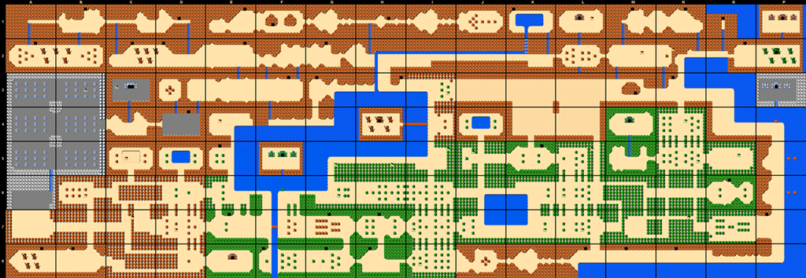
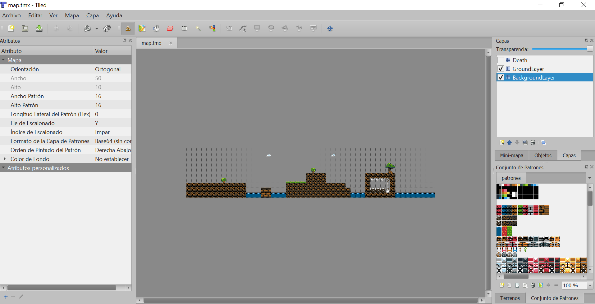
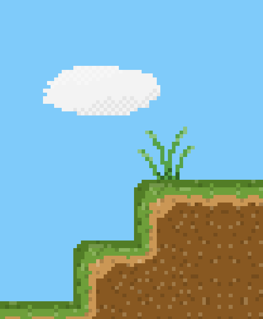

Tiles y Tiled
Carlos León
cleon@ucm.es
Tiles
Qué es un tile
Un tile (o baldosa) es un imagen, generalmente cuadrada y, generalmente, de tamaño fijo, que se usa para dibujar un elemento en un videojuego
Los tiles simplifican el desarrollo, ya que hacen que el mundo se considere una matriz discreta
Los tiles pueden ser usados para dibujar (por ejemplo, el mapa o el fondo) y también para la lógica del juego (como en los roguelikes)

Figura 1: Dungeon Crawl
Cada tile es una imagen particular, independiente… ¡O no!
Tile maps
Qué es un tile map
Un tile map es una simplificación de un mundo en 2D en la que dicho mundo es dividido en una cuadrícula de tamaño fijo (una matriz 2D)
En cada "celda" se pinta un tile, generalmente extraído de un tile set
Partes de un mapa de tiles
Normalmente está compuesto por:
- un fichero de datos con la definición del tile map
- su tamaño (ancho y alto)
- el tamaño de las casillas (tiles)
- qué tile o imagen va en cada casilla
- una hoja de sprites con todos los tiles disponibles juntos
Ejemplo de tile map

Figura 2: Tilemap de "The Legend of Zelda"
Tile sets
Un tile set se suele implementar como un archivo de imagen en el que cada celda representa un tile
Ejemplo de tile set
Figura 3: Tileset de "The Legend of Zelda"
Cada celda del tile set representa una imagen independiente
Esto funciona bien para cosas aisladas: monedas, árboles, cajas…
Pero no funciona bien en la playa
La playa

Figura 4: Tile set de "playa"
Para evitar los "cortes", los tiles normalmente están creados para repetirse en la escena sin que se vean costuras, de forma que se pueden construir escenas muy complejas
Se ocupa mucha menos memoria que dibujando la escena en una imagen (se carga una, se usa muchas veces)
¿Por qué es más eficiente?
- Mapa de 4096 \(\times\) 1024 con tiles de 64 \(\times\) 64:
- Sin tile map: 4096 \(\times\) 1024 \(\times\) 4B de color = 16.7 MB
- Con tile map: tile map de 64 \(\times\) 16 tiles y tile set de 1024 \(\times\) 1024 con 256 tiles (16 \(\times\) 16)
- Tamaño del tile map = 1024 \(\times\) 1B
- Tamaño del tile set = 1024 \(\times\) 1024 \(\times\) 4B de color = 4 MB
- Tamaño total = 4.01 MB
Otras ventajas:
- Al tener todos los tiles en la misma hoja de sprites sólo necesitamos una llamada a pintado para pintar todo el escenario
- Cuando cargamos desde Internet, es fundamental reducir los tiempos de carga
- Dibujar la escena es más sencillo, sobre todo con un editor de tiles
- Podemos reutilizar tiles en diferentes escenarios.
La desventaja es que los gráficos del escenario están repetidos
(Pero periódicamente se pone de moda)
Editores de tiles
¿Por qué usarlos?
Nos simplifican la edición del tile map enormemente
Crear el tile map a mano es mucho mas complejo y propenso a errores
Tiled
Tiled es un editor de niveles 2D que ayuda a desarrollar escenarios para juegos
Puede exportar a diferentes formatos, entre ellos el formato JSON que usa Phaser
Tiene soporte para diferentes capas (layers) e incluso para añadir una capa especial de objetos con la ubicación de los objetos en el mapa

Figura 5: La interfaz de Tiled
Partes de la interfaz de Tiled
- Menu contextual (izquierda)
- Tilesets (derecha abajo)
- Layers (derecha arriba)
- Herramientas (parte superior)
- Zona de edición (centro)
Crear un nuevo proyecto
Creamos un nuevo proyecto en Archivo \(\rightarrow\) Nuevo y aparecerá la ventana de creación del tile map
Figura 6: Nuevo proyecto
Aquí establecemos:
- El tamaño del patrón (tile) y el número de patrones que tendrá el nivel
- Si queremos vista ortogonal o isométrica
- El formato de la capa de patrones para Phaser ha de ser Base64 (uncompressed) sin comprimir
- No creamos un mapa infinito
Proyecciones ortogonal e isométrica
- Base ortogonal es la tradicional en los juegos 2D (visto "desde arriba" o "lateral")
- Base isométrica es una vista ortogonal especial que simula el 3D sin corrección de perspectiva
- Todos los ejes forman un ángulo de 120º. El dibujo se gira 45º para poner la esquina del escenario frente al espectador
- La cámara se situaría en la esquina superior
Figura 7: Perspectiva isométrica

Figura 8: Perspectiva isométrica en Tiled
Figura 9: Perspectiva ortogonal en Tiled
Usar tilesets
Figura 10: Añadir un tileset
Importante
El nombre que le demos al tile set se usará posteriormente para cargar el spritesheet con los tiles en Phaser
Añadir una capa
Podemos añadir nuevas capas
Las capas son importantes para diferenciar los objetos del fondo con los objetos del suelo
Figura 11: Añadir capas
Exportar
Los mapas se guardan con la extensión .tmx
Para usar el mapa que hemos creado, lo tenemos que exportar a JSON (.json)
Hay más formatos, pero lo mejor opción es JSON
Figura 12: Para que la exportación no dé problemas con Phaser, lo ideal es activar Embed tilesets y Resolve object types and properties en las propiedades de Tiled
Figura 13: Archivo \(\rightarrow\) Exportar como...
Tile maps en Phaser
Phaser 3.50
A partir de Phaser 3.50.0 cambia la API de los mapas, y se hace algo mejor (y más potente)
Tened cuidado con las versiones en la documentación disponible
TileMaps en Phaser
- Carga de archivos de datos e imágenes
- Creación del tilemap
- Asignamos las texturas a los tilesets
- Creación de las capas
1. Carga de archivos de datos e imágenes
Para cargar el fichero de descripción del tile map, usamos tilemapTiledJSON() en preload()
this.load.tilemapTiledJSON('tilemap', 'tilemap.json');
- El primer parámetro es el nombre del recurso en la cache
- El segundo es el fichero JSON que contiene la descripción del mapa
Esto sólo carga el archivo del tilemap, no crea un tilemap en el juego
Para cargar el atlas de patrones usaremos la carga de imagenes normal: load.image
this.load.image('patronesTilemap', 'images/patrones.png');
2. Creación del tilemap
Para crear un tilemap usamos el subsistema make.tilemap y el recurso cargado en la cache como tilemap, en el método create() (no en preload())
this.map = this.make.tilemap({
key: 'tilemap',
tileWidth: 64,
tileHeight: 64
});
Este objeto tiene propiedades importantes como el ancho y el alto (en tiles y en píxels) que son útiles para establecer los límites (bounds) del mundo y de la cámara
Así mismo, tiene métodos para convertir coordenadas del mundo en tiles y viceversa o para acceder a información de los tiles o de las capas.
3. Texturas de los tilesets
Posteriormente creamos los tilesets, asignando las imágenes cargadas a los tileset usados en el tilemap:
const tileset1 = this.map.addTilesetImage('nombreTilemap', 'claveTextura');
La textura debe estar previamente cargada y el nombre de la textura en el mapa de tiles es conocido (está en el JSON exportado desde Tiled)
Un mapa de tiles puede tener más de una textura asociada, por lo que hay que asignar el nombre usado en el editor al asignar al tileset al nombre de la textura cargada en la cache (está en el JSON exportado desde Tiled)
Por ejemplo, 'patrones' y 'patronesFondo' son nombres de tilesets en Tiled—los que están en las pestañas:
const tileset1 = this.map.addTilesetImage('patrones', 'idImagen');
const tileset2 = this.map.addTilesetImage('patronesFondo', 'idImagen2');
4. Creación de las capas
Por último, es necesario crear las capas para que el mapa se visualice.
Como hemos visto, en el editor de tiles podemos crear diferentes capas o layers
Las capas tienen entidad única y se pueden manejar independientemente (por ejemplo, para colisiones)
Una capa permite diferenciar los objetos del fondo con los objetos de frente o tener diferentes fondos
Si hay capas creadas en el editor, podemos asignar estas capas (layers) en Phaser:
// tileset1, tileset2 han sido creados con `addTilesetImage`
this.backgroundLayer =
this.map.createLayer('BackgroundLayer',
[tileset1, tileset2]);
// funciona con y sin array
this.groundLayer =
this.map.createLayer('GroundLayer'
, tileset1);
this.foreground =
this.map.createLayer('Foreground'
, [tileset1, tileset2]);
Colisiones con mapas
Una parte importante, una vez que tenemos el mapa, es que los tiles tengan propiedades físicas
Colisión por propiedades
Por ejemplo, dada una capa (layer), podemos hacer que todos aquellos tiles que tengan cierta propiedad, colisionen:
layer.setCollisionByProperty({ colisiona: true });
Colisión por inclusión
O podemos hacer que los tiles con id en un rango concreto, colisionen:
// así colisionarán todos los tiles de la capa
// asumiendo que no hay id > 999
layer.setCollisionBetween(0, 999);
En efecto, cada tipo de tile tiene un id
Colisión por exclusión
// `true` es que activa la colisión
layer.setCollisionByExclusion([93, 94, 95, 96], true);
Colisiones de Sprites con capas
Aunque hayamos activado las colisiones para los tiles, tenemos que activar colliders para cada entidad que lo necesite:
this.physics.add.collider(player, layer);
También podemos eliminar un collider antes creado
Por ejemplo, para hacer que se puedan cruzar zonas que antes no se podía:
this.collider = this.physics.add.collider(
this.player,
room.foreground);
// y, después
this.collider.destroy();
Los ejemplos anteriores son para Arcade
Para que funcione la colisión con Matter.js, hay que poner también:
this.matter.world.convertTilemapLayer(suelo);
Capas de objetos
Además de los tiles que forman el escenario, también podemos poner a nuestros personajes en Tiled
Figura 14: Estos personajes debemos ponerlos en capas de objetos
Después, desde Phaser, no crearemos layers de Phaser desde las capas de objetos de Tiled, sino que crearemos =Sprite=s a partir de los objetos de la capa
Lo haremos con createFromObjects:
// con el GID de objeto
conId1 = map.createFromObjects('nombreDeCapaObjetosEnTiled', {gid: 1})
// o con el nombre del objeto (`name` en Tiled)
players = map.createFromObjects('nombreDeCapaObjetosEnTiled', {name: 'player'})
// players es un array por lo que podemos aplicar funciones sobre sus elementos
// como esta que cambia la vida
players.map(p => p.vida = 10)
Si no quiero Sprite=s, podemos decirle el tipo (que tiene que heredar de =GameObject):
createFromObjects(layerName, {
name: 'heart-container',
classType: HeartContainer
})
Phaser colocará estos =Sprite=s en el lugar apropiado
Cualquier propiedad de GameObject añadida en Tiled será copiada en el GameObject creado (por ejemplo, alpha)
Cualquier otra propiedad será añadida al data del GameObject (acceso a propiedades con getData(key) y setData(key, value))
Crear los objetos analizando el mapa
Para no usar createFromObjects(), también podemos examinar la capa a mano y crear los objetos directamente
Este código se creó para Phaser < 3.50, no suele ser necesario con las últimas versiones
Los objetos de una capa de objetos los podemos encontrar en:
this.mapa.getObjectLayer('capaObjetos').objects
Así, podemos iterar sobre ellos:
// En Tiled tiene que haber una capa de objetos llamada `capaObjetos`
for (const objeto of scene.mapa.getObjectLayer('capaObjetos').objects) {
// `objeto.name` u `objeto.type` nos llegan de las propiedades del
// objeto en Tiled
if (objeto.type === 'player') {
new Player(scene, objeto.x, objeto.y)
}
}
Además, podemos examinar las propiedades que hayamos añadido al objeto en Tiled:
for (const objeto of scene.mapa.getObjectLayer('capaObjetos').objects) {
if (objeto.name === 'player') {
const jugador = new Player(scene, objeto.x, objeto.y)
for (const { name, value } of objeto.properties) {
jugador[name] = value
}
}
}
Una función para cargar:
function cargar(mapa, capa, tipo, callback) {
const objetos = mapa.getObjectLayer(capa).objects.filter(x => x.type === tipo)
for (const objeto of objetos) {
const props = {}
if (objeto.properties) {
for (const { name, value } of objeto.properties) {
props[name] = value
}
}
callback({ x: objeto.x, y: objeto.y, props })
}
}
Y, para usarla:
cargar(this.mapa, 'objetos', 'player', ({ x, y, props }) => {
this.player = new Player(this, x, y)
this.player.vida = props.vida
})
Escala
Escalar un mapa, o cualquier otra cosa, es posible, pero es mucho más fácil diseñar todo a una escala dada
Es decir, que los assets estén dibujados con escalas relativas, sin que haya que redimensionar algunos elementos para que encaje
Sin embargo, el tamaño de página, dispositivo y pantalla en el que se ejecutará el juego puede cambiar, por lo que reescalar puede ser necesario
Phaser 3 lo pone muy fácil con la propiedad scale de la configuración:
const config = {
width: 1024,
height: 768,
scale: {
mode: Phaser.Scale.FIT,
// mode: Phaser.Scale.SMOOTH,
autoCenter: Phaser.Scale.CENTER_BOTH
}
}
Cambiando width y height y el tamaño del canvas, se ajusta el tamaño del juego
Pero este escalado hará que los bordes de los píxeles pequeños, al agrandar, se vean difuminados (por el algoritmo de escalado)
Figura 15: Filtro de escalado con difuminado
Afortunadamente, Phaser sabe que adoramos el pixelart:
const config = {
pixelArt: true
}

Figura 16: Filtro de escalado para pixelart
Tiles que no son cuadrados
Hasta ahora hemos asumido que los tiles tienen que ser cuadrados
Pero con Matter.js es posible conseguir que las físicas de un tile tenga otra forma
Figura 17: Tile con forma de cuesta que debería tener una colisión no cuadrada
Figura 18: Primero, tenemos un tileset cargado
Vamos a las propiedades del tileset , y luego a editar las colisiones

Figura 19: Y, en Tiled, dibujamos la forma de colisión que deseemos
Cuando hagáis esto, es recomendable que se lo pongáis fácil a Matter.js haciendo los polígonos convexos
Si el polígono es cóncavo, tendrá que subdividir el polígono en varios convexos, o usar una malla que tenga más coste (casco convexo)
Tenéis varios ejemplos del uso de Tilemaps con Matter en la página de Phaser